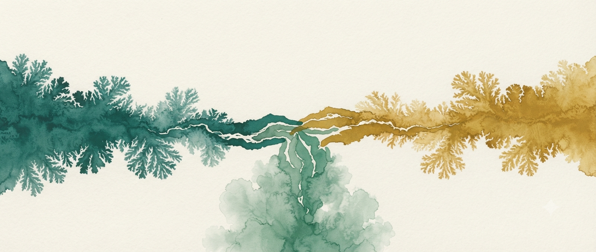

Trois langues pour la même question
à lire avant de choisir une porte d'entrée
Quelqu'un vit depuis des années avec un agacement tenace envers un proche ; un trait précis, reconnaissable entre mille, l'exaspère à chaque fois. Un jour, dans une conversation ordinaire, un ami lui dit, sans malice : « tu sais que tu fais exactement pareil ? » Le choc n'est pas immédiat. Il vient une heure plus tard, seul, quand le souvenir revient et refuse de s'effacer. Ce qu'il reprochait dehors, il l'a en lui. Les jours suivants sont difficiles : une gêne sourde, presque de la honte, à se regarder ainsi. Puis, avec le temps, quelque chose se dépose : non pas l'oubli du défaut, mais une forme de paix avec son existence. Il ne le combat plus de l'extérieur ; il le connaît, il le surveille, il vit avec.
Trois moments dans cette seule histoire : agir sans se voir, se voir et en souffrir, faire la paix. Ce mouvement en trois temps, presque tout le monde le traverse un jour sous une forme ou une autre. Et presque toutes les traditions qui prennent l'être humain au sérieux ont fini par le nommer, chacune dans sa langue.
Un psychiatre a appelé ça la rencontre avec l'ombre : cette part de soi si inacceptable qu'on préfère l'attribuer aux autres plutôt que de la reconnaître comme sienne. Tant qu'elle reste ignorée, elle agit d'autant plus fort qu'on ne la voit pas ; on croit choisir librement ce à quoi, en réalité, on obéit sans le savoir. Un texte religieux, des siècles avant lui, décrivait déjà trois états de l'âme : celle qui commande le mal sans recul ni remords, celle qui se reproche une fois la conscience éveillée, et celle qui, au bout du chemin, trouve la paix. Ce trajet, que la tradition spirituelle a lu comme une progression, dessine une montée étrangement proche de celle que le psychiatre décrira bien plus tard.
Aucun des deux récits n'a besoin de l'autre pour se comprendre. Mais celui qui a entendu l'un reconnaît quelque chose quand il rencontre l'autre, et cette reconnaissance n'est pas un hasard heureux : c'est le signe que deux langages, chacun à sa manière, décrivaient la même expérience humaine.
Ce n'est pas un cas unique. La philosophie, la théologie et la psychologie des profondeurs butent régulièrement sur les mêmes questions, avec des mots qui semblent n'avoir rien en commun. Ne pas l'entendre n'est pas une erreur de savoir, c'est une erreur d'écoute.
❦
Quelqu'un attend un résultat qui va décider de beaucoup : un diagnostic, une réponse, une décision qui ne lui appartient pas. Les premiers jours, il passe son temps à vouloir peser sur l'issue ; il refait des scénarios, cherche des leviers, comme si assez d'effort mental pouvait forcer une réponse favorable. L'épuisement vient vite, et l'issue, elle, n'a pas bougé. Puis, un soir, une phrase lui traverse l'esprit, banale entre toutes : ce n'est plus entre mes mains. Il l'a déjà pensée cent fois. Ce qui est nouveau, ce soir-là, c'est qu'il la croit. Le résultat reste hors de portée, entièrement ; mais quelque chose en lui se dénoue.
Un philosophe dirait qu'il a cessé de placer sa liberté dans ce qui ne dépend pas de lui, pour la retrouver dans ce qui en dépend : sa manière d'occuper l'attente, le ton qu'il se donne à lui-même en silence. Un psychiatre, confronté un jour à une situation où presque rien ne dépendait plus de lui, décrirait ce même déplacement comme la dernière liberté qu'on ne peut retirer à personne. Un théologien dirait autre chose, apparenté mais non identique : il a fait tawakkul, il a remis l'issue à Dieu. Non par abandon passif ; la tradition prend soin de le préciser : on attache d'abord son chameau, puis on fait confiance. Il a fait sa part, et la suite ne lui appartient plus.
Les trois ne disent pas exactement la même chose. Le philosophe et le psychiatre relogent la liberté à l'intérieur de soi. Le théologien la remet à plus grand que soi. Mais tous trois répondent à la même situation concrète, le résultat qui échappe, et tous trois trouvent, par des chemins distincts, qu'une forme de paix existe même là où le contrôle a disparu.
Il serait facile de mal comprendre ce que ces échos démontrent. Ils ne prouvent pas que toutes les traditions disent la même chose sous des habits différents : les écoles de la théologie islamique se distinguent bel et bien sur des questions réelles, la philosophie et la théologie n'aboutissent pas aux mêmes conclusions sur le monde, et la psychologie des profondeurs elle-même met en garde contre l'idée de fondre les traditions les unes dans les autres sans respecter ce qui, en elles, ne se traduit pas. Le confluent n'est pas une fusion : à l'endroit où deux mers se rencontrent, chacune garde sa nature, et c'est précisément cela qui rend leur rencontre visible.
Ce que ces échos montrent, plus modestement mais plus solidement : qu'une question mal comprise dans un vocabulaire peut soudain s'éclairer dans un autre, non parce que les deux se valent, mais parce que l'expérience humaine qu'ils cherchent tous deux à nommer déborde chacun d'eux pris isolément. Lire ce site, c'est accepter de circuler entre ces langues sans jamais perdre de vue qu'elles restent, chacune, une langue à part entière.
Trois langues, une question qui les traverse toutes :
c'est cela, le confluent. مجمع
Une porte d'entrée vous attire déjà ? Par où commencer. Sinon, les deux échos de cet essai se prolongent chacun dans un texte dédié.
Pour aller plus loin
- Le premier écho, en détail : L'ombre et le nafs, où l'ombre de Jung et les trois stations du nafs coranique se répondent.
- Le second écho se prolonge avec Le sens malgré tout, sur la liberté intérieure face à ce qui échappe.
- Pour choisir une première lecture selon ce qui vous attire : Par où commencer ?